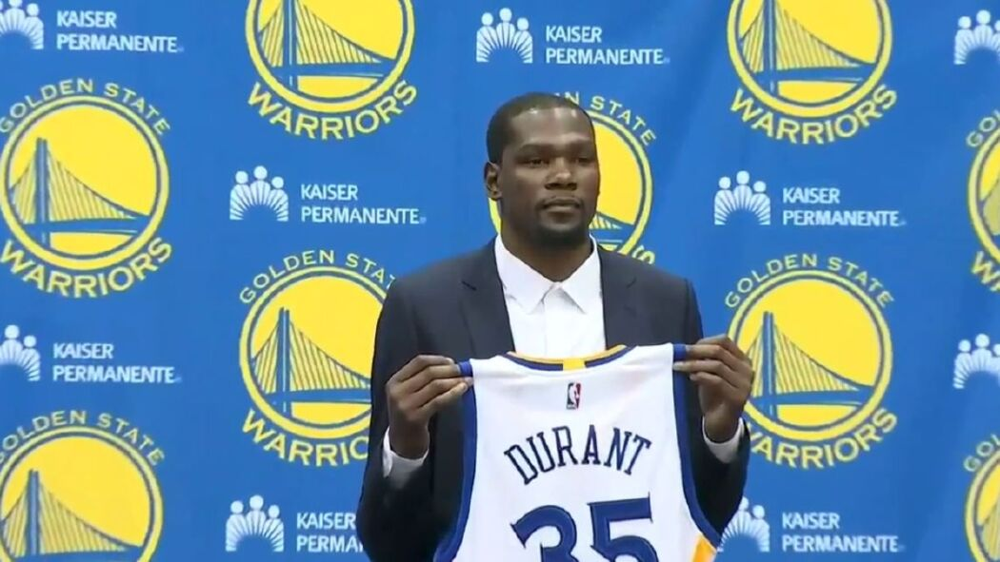

A transferência de Kevin Durant para o Warriors foi bastante polêmica. O time era o mais forte da liga e tinha alcançado a final da competição nos dois últimos anos. Muitos torcedores do OKC acusaram Durant de traição, justamente por “abandonar” o clube para se transferir para uma equipe que estava em alta no momento.
Apesar de toda a polêmica, a transferência deu muito certo, como já era de se esperar. Kevin Durant se juntou aos astros Klay Thompson, Draymond Green e Stephen Curry, formando um dos melhores times da história da NBA.
O resultado não poderia ser diferente. Nas três temporadas em que Kevin Durant atuou no Warriors (2016-2017, 2017-2018 e 2018-2019), chegou às três finais, conquistando o título nas duas primeiras.
Durante as finais da temporada 2018-2019, diante do Toronto Raptors, Durant sofreu uma séria lesão no jogo 5 da disputa e ficou fora do confronto decisivo que deu o título para Toronto.
Depois da derrota e da perda do título, Durant se transferiu para o Brooklyn Nets, com um contrato de quatro temporadas.